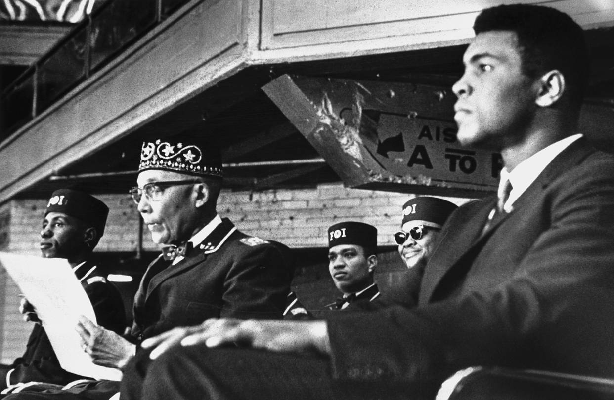
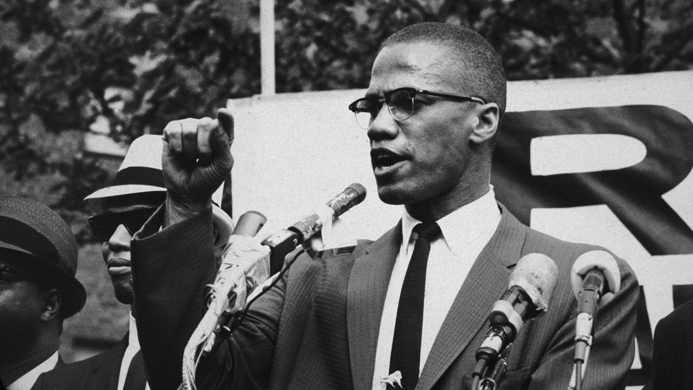

NATION OF ISLAM
BACKGROUND
The Nation of Islam was a Black nationalist organization that emerged in the United States during the Civil Rights Movement. The organization was founded in Detroit in 1930 by Wallace D. Fard and was led for several decades by Elijah Muhammad. The Nation of Islam was unique among civil rights groups in its focus on self-determination and separation from white society. It promoted black nationalism, self-sufficiency, and separatism as the solution to racial inequality and oppression. The organization also emphasized strict discipline, traditional gender roles, and the rejection of mainstream American values. The Nation of Islam gained national attention in the 1960s, particularly through the charismatic leadership of Malcolm X, who became one of the most prominent voices of the Civil Rights Movement. While the Nation of Islam's views and tactics were controversial and sometimes violent, the organization played an important role in shaping the discourse around Black liberation and racial justice during a critical period of American history.
MALCOM X
Malcolm X, born Malcolm Little in 1925, was a prominent African American leader and a key figure in the Civil Rights Movement. He joined the Nation of Islam while serving a prison sentence in the 1940s and became a minister and spokesperson for the organization. Malcolm X was known for his fiery rhetoric and uncompromising stance on racial justice, advocating for black self-defense and self-determination. He became a national figure in the 1960s through his public speeches, which often criticized white supremacy and called for black separatism. Malcolm X's views and tactics were controversial, and he was often seen as a polarizing figure within the Civil Rights Movement.
MUHAMMAD ALI

Muhammad Ali, the famous boxer and one of the greatest athletes of all time, was also a prominent figure in the Nation of Islam. He used his platform as a world-famous athlete to promote the organization's message of black pride and empowerment. Ali's interest in the Nation of Islam began in the 1960s, and he was particularly inspired by the teachings of Malcolm X. (as seen above). After converting to Islam and changing his name from Cassius Clay to Muhammad Ali, he became an outspoken advocate for the Nation of Islam's message of black nationalism and self-determination. He used his fame and popularity to spread the message of the Nation of Islam and its teachings, and his outspoken advocacy for these beliefs made him an influential figure during the Civil Rights Movement.